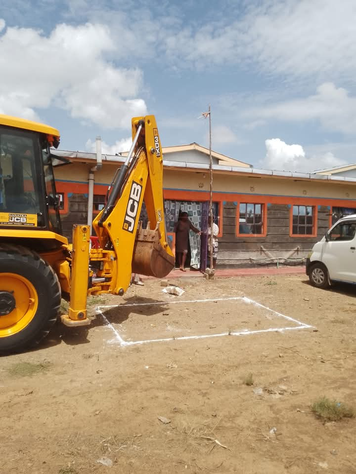

Kenya's trusted partner in eco-friendly waste management and modern plumbing solutions.

Eco Septic Ventures is a leading waste management company in Kenya specializing in biodigester installations, grease traps, pit latrine treatment, plumbing, and biogas systems. With over 200 successful installations across diverse terrains — from cotton soil and rocky areas to red soil and sand — we've earned the trust of homeowners, developers, schools, and businesses.
Our mission is simple: provide permanent, eco-friendly waste solutions that save our clients money, protect the environment, and never require exhausting.
Here's what makes our biodigester system superior to traditional septic tanks.
Airtight reinforced panels prevent foul odors common in conventional tanks.
Waste is bio-degraded to produce harmless gases and clean water. It never gets full!
Lower installation and maintenance costs compared to traditional systems.
Occupies a very small space, preserving your property's aesthetics and usability.
Works in cotton soil, rocky terrain, red soil, murram, and sand soil.
Polystyrene material doesn't decompose, ensuring long-lasting performance.
Don't just take our word for it — hear what our satisfied clients have to say.
"Eco Septic Ventures installed a biodigester at my home, and I haven't had a single odor issue since. Highly professional and efficient team!"
"We contracted them for our school's waste management. The system is economical and handles our high capacity seamlessly."
"The rocky terrain at our site was tough, but their team handled the installation flawlessly. Best decision we made for our commercial property."
Get answers to common questions about our biodigester systems and services.
A biodigester is an eco-friendly waste management system that uses specially engineered bacteria to break down human waste into clean water and harmless gases. Unlike traditional septic tanks, it never fills up, produces no odour, and requires zero exhausting.
A typical biodigester installation takes 1-3 days depending on the terrain and property size. Our team handles everything from excavation to final connections and testing.
Absolutely! We specialize in installations across all terrain types — cotton soil, rocky ground, red soil, murram, and sand. Our experienced team has the equipment and expertise to handle any site condition.
Biodigesters are virtually maintenance-free. The biological process is self-sustaining. You don't need to add chemicals, pump it out, or perform regular servicing. Just use it normally and it takes care of itself.
The cost depends on the property size, number of users, terrain type, and system configuration. We offer a free site visit where we assess your needs and provide a transparent, no-obligation quote. Contact us to schedule your free visit!
Yes! We serve clients across all of Kenya. Whether you're in Nairobi, Mombasa, Kisumu, Nakuru, or rural areas — our team will come to you for the free site visit and installation.